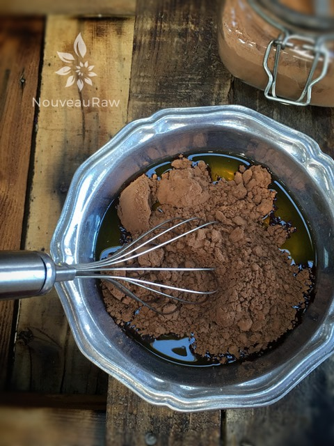
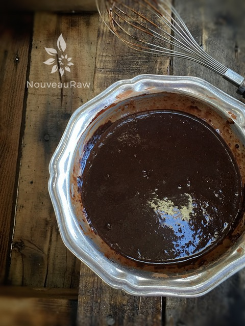
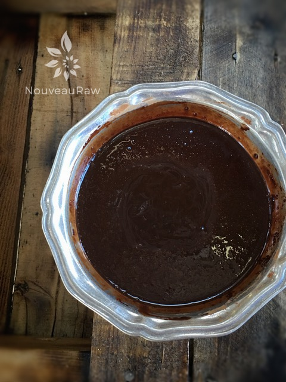
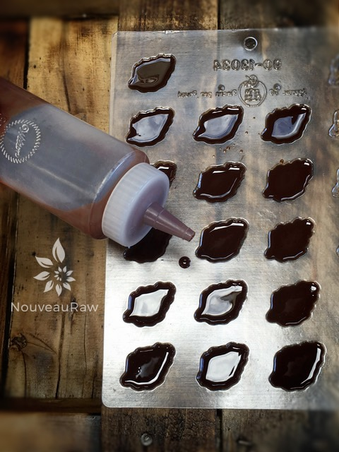

A Simple Dark Chocolate
~ raw, vegan, gluten-free, nut-free ~
This is a quick and easy hardening chocolate recipe that I have made over and over and over. It is semi-sweet but oh so rich in flavor. Perfect for coating other sweet treats with or to use by itself in chocolate molds. It is a wonderful base for experimenting with or adding in different flavors and extra ingredients like dried fruit, seeds, and nuts.
See the instructions below on how to melt the cacao butter; either by using a double boiler or by placing it in a dehydrator. I typically don’t mess with a double boiler because the risk of getting moisture droplets in the chocolate, is to nerve wracking for me. Those little, normally harmless moisture droplets can seize-up your chocolate in no time.
Sliding a container of cacao butter into my Excalibur is so easy and allows me to multitask in getting all of my other ingredients and supplies ready. When using a dehydrator, you will need one that has an opening like the Excalibur or Sedona for example. A machine that has stackable trays won’t work.
Another beauty to this chocolate and in using a dehydrator is that should your chocolate start to get too thick for your application… you can just slide the bowl of chocolate back into the dehydrator and let it melt back down.
So far, I haven’t experienced any ingredient separation or seizing. Always be sure to melt and prepare your chocolate in a glass or stainless steel bowl, this will retain an even temperature and you won’t have the worry of plastics leaching into the chocolate.
When creating chocolates, one of my “rules” is to always have an extra chocolate mold near by. It never fails that I have some extra chocolate left over and scramble to find something to pour it in before it thickens. Whether you end up needing it or not, it will give you comfort just in having it there.

Like you really need to know how to use chocolate. Silly me. But there are a few things that I wanted to mention. This chocolate recipe will melt in your hands if handled too long. So it would be best to keep it stored in the freezer, enjoying one piece at a time when those cravings strike. This chocolate would also work well for cake decorating… use molds that fit the theme that you want to create to enhance the beauty of the cake. Another application is using it as a coating for raw candy bars, cookies, and nut balls. So many wonderful things to do with chocolate. I hope you enjoy the recipe. Blessings, amie sue
Ingredients:
yields 1 cup
- 1/2 cup (100 g) raw cacao butter
- 6 Tbsp (37 g) raw cacao powder
- 1/4 cup maple syrup
- 1 pinch Himalayan pink salt
Preparation:
- WARNING….Be prepared with all your tools prior to starting the chocolate.
- Have the chocolate molds ready by placing them on a cookie sheet. This will make transporting them to the fridge or freezer much easier. Molds can be flimsy and you can end up with chocolate drippings on the floor.
- You will want to create a double boiler to melt the cacao butter or you can melt it in the dehydrator set at 115 degrees (F).
- If using a double boiler, DO NOT allow water drops to get into the pan, it can seize-up the chocolate. If that happens don’t throw it away, use it in another creation but you will need to start over.
- Melt the cacao butter in a glass or stainless steel bowl, until it is in liquid form.
- Once the cacao butter is melted add the cacao powder, whisk all the lumps away.
- Use a metal whisk for blending the ingredients together.
- Add maple syrup and salt. Whisk together.
- Taste and add more sweetener if you prefer a sweeter taste.
- Transfer the chocolate to a squeeze bottle for easy filling of the cavities. If you don’t have one, spoon the chocolate into the molds(s).
- If using plastic molds, be sure to fill the cavities all the way up to the top for ease of removal. If silicone, you don’t have to worry about this so much.
- If the mixture gets too thick to pour, (The room temperature can effect how quickly this happens) place the bowl back on the double boiler or in the dehydrator until it is liquid once again.
- Place in the fridge or freezer for 20 – 30 minutes to set up.
- Store in airtight containers. They can be left at room temp for a few hours, placed in the fridge for 1-2 weeks or frozen for 1 month.

Add raw cacao powder and salt. And whisk to remove all lumps and bumps.

You can’t tell, but I just poured the maple syrup in.

All whisked together and ready to pour. To make it easier, I transfer the chocolate to a squeeze bottle.

As you can see, less mess with the use of the squeeze bottle. Once the cavities are filled, transfer to the freezer to solidify.
© AmieSue.com